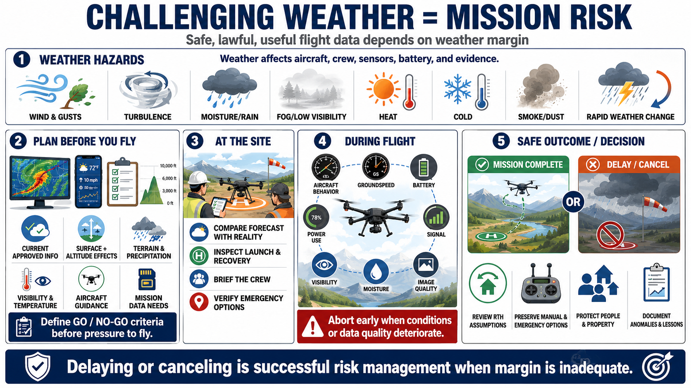

Course Summary and Key Takeaways
Connecting to LMS... Progress: in progress

Narration
Challenging weather can turn a routine mission into an unsafe or low-value operation. Wind, gusts, turbulence, moisture, fog, heat, cold, smoke, dust, visibility, and rapid change affect the aircraft, crew, sensors, battery, and evidence.
Plan with current approved information, forecast timing, surface and altitude effects, local terrain, precipitation, visibility, temperature, aircraft guidance, and mission data requirements. Define go or no-go criteria before pressure to fly develops.
At the site, compare forecast with reality, inspect launch and recovery, brief the crew, and verify emergency options. During flight, monitor aircraft behavior, groundspeed, power use, battery, signal, visibility, moisture, and image quality.
Review return-to-home assumptions and preserve manual and emergency landing options. Abort early when conditions or data quality deteriorate. Protect people and property, then document anomalies and lessons.
The goal is safe, lawful, useful flight data, not forcing a mission through conditions that exceed aircraft, crew, or mission limits. Delaying or canceling is successful risk management when margin is inadequate.